テストプレイヤー募集
麻雀に「キャラクターの能力」と「物語」を乗せたブラウザゲーム『ツモノグリフ』の、開発中テスト版を遊んでくれる人を探しています。
- 参加条件
- ありません。どなたでも遊べます。麻雀のルールを知らなくても大丈夫です（役も点数も自動で計算されます）。
- 遊ぶ量
- 最後まで遊ぶ必要はありません。15分だけ触った感想でも、十分に役立ちます。
- いただくもの
- 一行の感想で構いません。「途中でやめたくなった」なら、その理由がいちばん知りたいことです。
- ご注意
- 完成前の開発版です。未実装の場所や、粗い部分がまだ残っています。
点棒＝HP
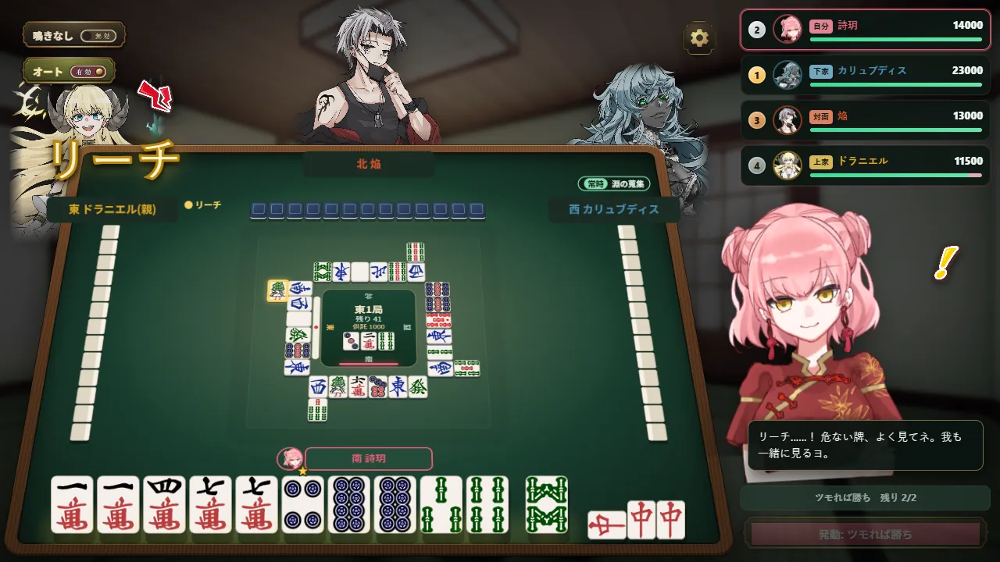
−12,000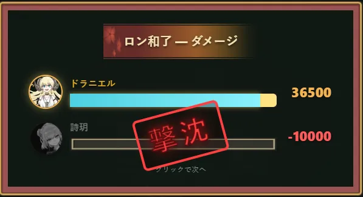
持ち点は、そのままHPです。振り込めば自分のバーが削れ、和了れば相手のバーを削ります。
削られた瞬間は画面が揺れ、バーには白い残像が残ります。残りが4分の1を切ると卓の縁が赤く脈打ち、心音が鳴りはじめます。0を割れば撃沈です。
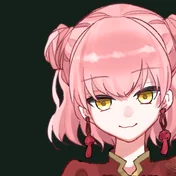
自分詩玥 14,000跳満（12,000点）をひとつ振り込むと、詩玥の14,000は2,000に。
うっ、先に張られたネ。……無理は禁物ダヨ。点棒が減るの、見たくないもん。
卓を囲む
卓の奥には、対戦相手が座っています。リーチの声は本人の胸元から上がり、いま手番の人は、その人の色でふちどられます。
和了れば喜び、振り込めば崩れる。あなたのリーチやツモには身構え、リーチを受けた番では「…」と考え込むことも。画面の中の三人を、同じ卓を囲む相手として打てるようにしました。
写真：対面の真守 由紀がリーチ。いま手番の焔は、赤くふちどられている。
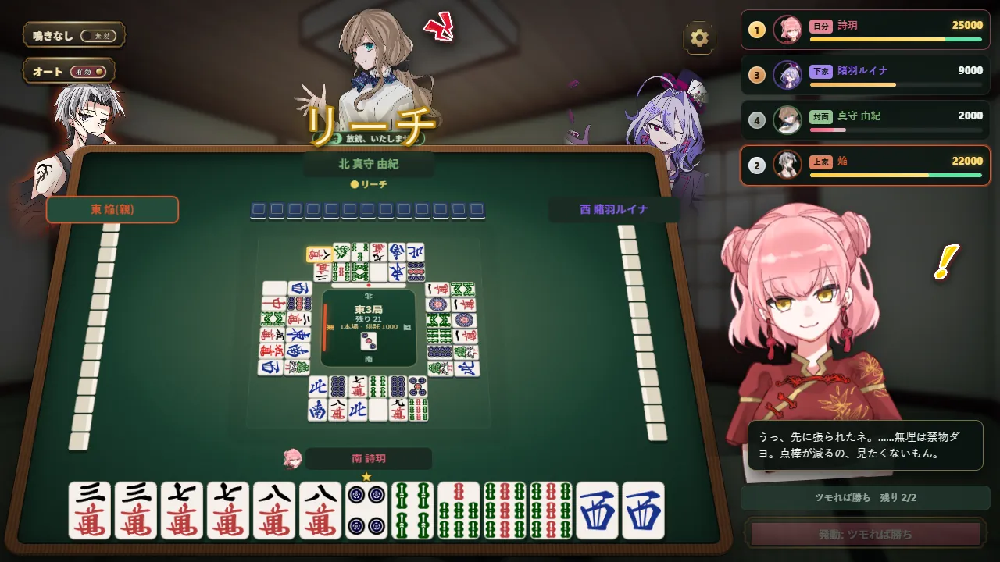
リーチ……！ 危ない牌、よく見てネ。我も一緒に見るヨ。
相棒と絆
相棒は、卓の右の縁から身を乗り出して一緒に打ちます。相手のリーチには身構え、あなたのリーチには声を張り、削られれば一緒に痛がる。対局の前にも、終わったあとにも、ひと言があります。
打った記録は絆として積もり、同じ場面でも、返ってくる言葉が変わっていきます。
段階と場面を選ぶと、詩玥が答えます。立ち絵に触れても。
絆の段階
場面
※ 絆が積もるのは、Googleログインで遊んだときです（ログインしなくても遊べます）。
さーて、今日も派手にツモってくヨ。ついてきて、ネ？
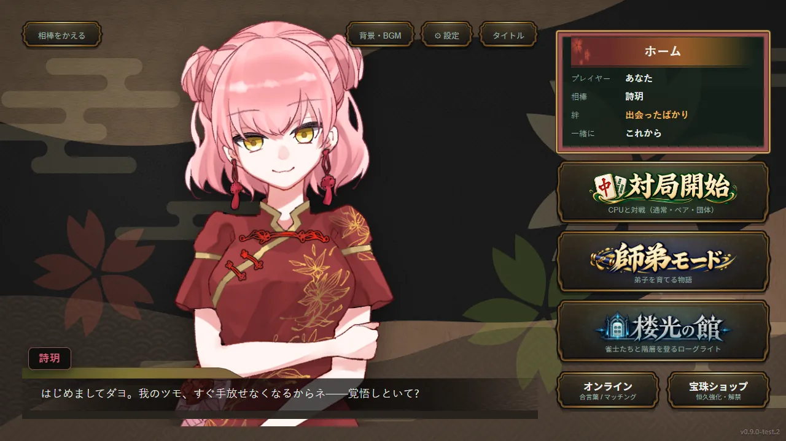
ホームで出迎える 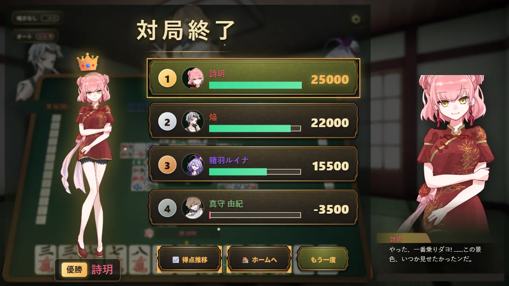
対局のあとのひと言 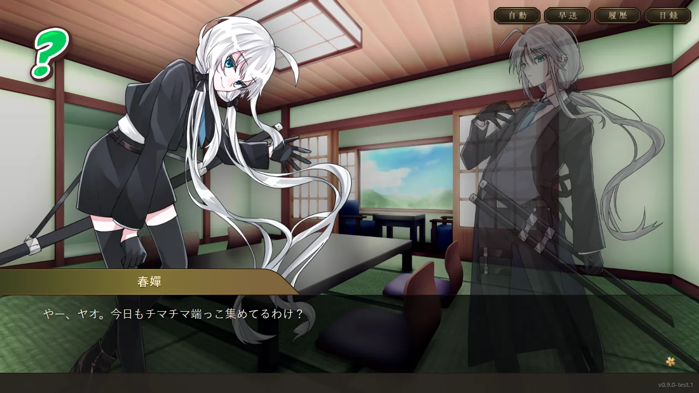
物語が進む紙芝居
遊びかた
どの遊びも、相棒が待つホームから始まります。
-
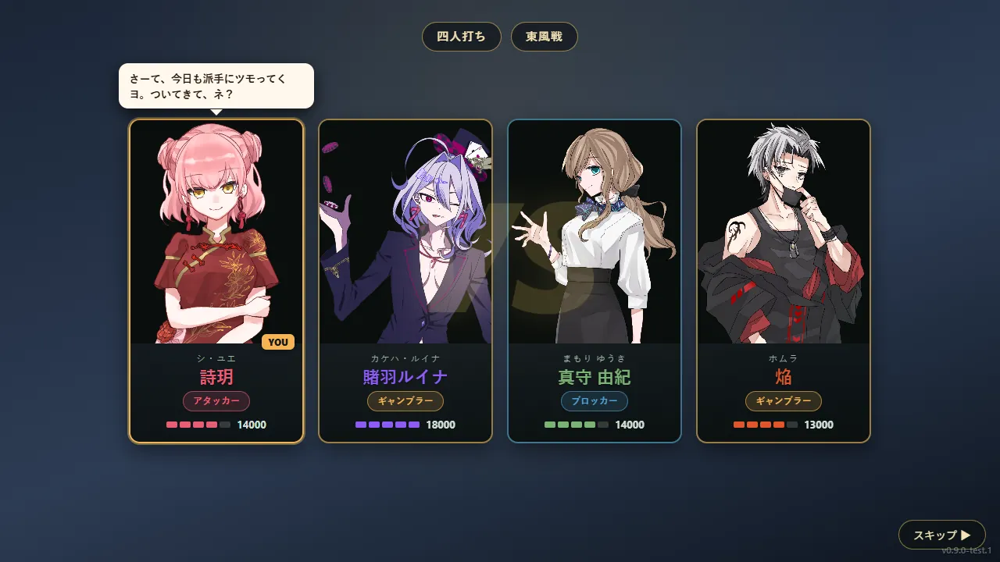
CPUと対戦
好きなキャラで1局から。4人・3人・2人打ちのほか、2対2のペア戦、3人チームの団体戦も選べます。ホームから2手で卓につけます。
東風戦1回でおよそ10分
-
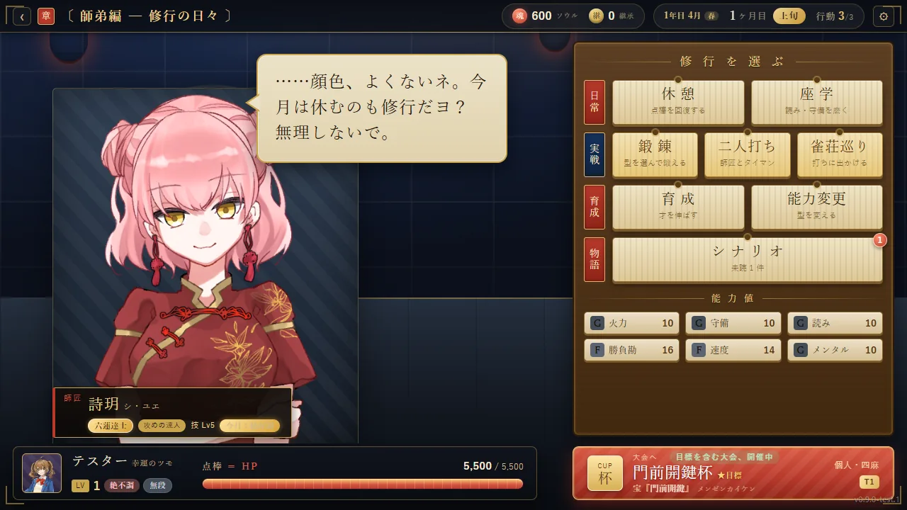
師弟モード
自分の雀士を作って師匠に弟子入りし、修行と大会を重ねながら物語を進める育成モードです。
弟子を作って1ヶ月分でおよそ10分
-
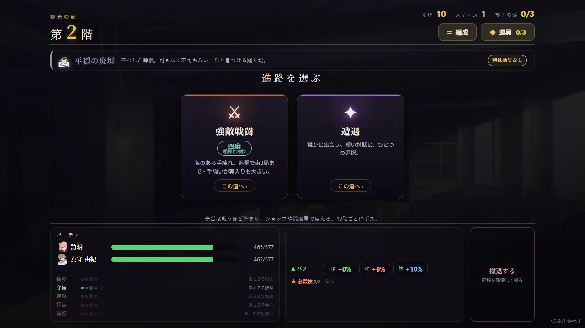
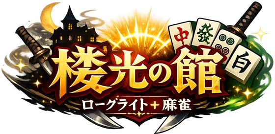
楼光の館
3人パーティで塔を潜るローグライト。強化を引きながら、どこまで登れるかに挑みます。
数階もぐっておよそ15分
-
オンライン
合言葉で友だちと同じ卓を囲めます。いまは限定運用で、合言葉ルームでの対戦をおすすめしています。
ホームの「オンライン」から

麻雀を知らなくても
役も点数も自動で計算されるので、ルールを知らなくても打てます。知っている人には、いつものリーチ麻雀がそのまま土台にあります。
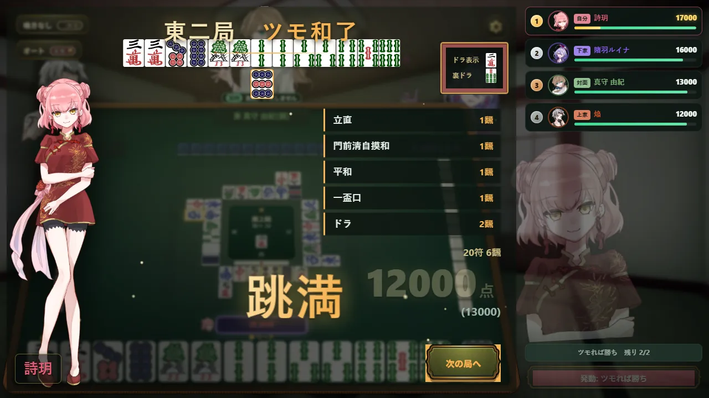
卓につく十六人
この中からひとりを相棒に選んで卓につきます。能力はキャラごとに別物で、点棒の減りかた・増えかたが変わります。カードを選ぶと、能力が読めます。
遊びながら解禁される
3人がいます
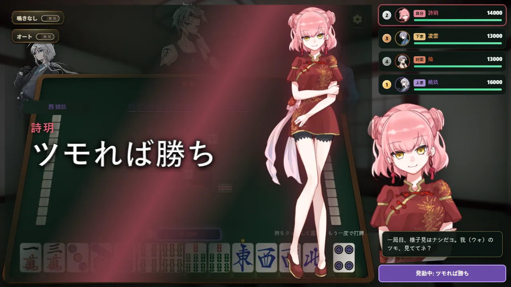
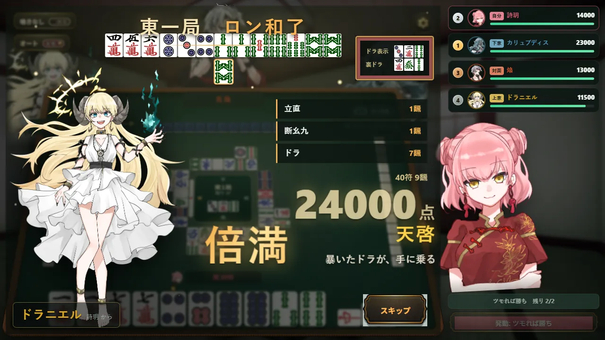
参加のしかた
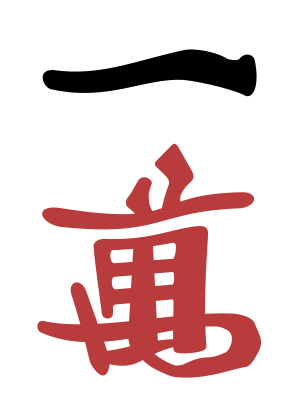
「テスト版をプレイ」を押す
ブラウザでそのまま始まります。インストールもアカウント登録も要りません（推奨は PC の Google Chrome です）。
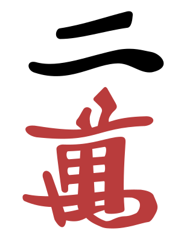
好きなだけ遊ぶ
クリアする必要はありません。迷ったら、ホームの「CPUと対戦」→「おまかせで即対局」から1局どうぞ。「分からない」「ここでやめたくなった」と感じたら、その時点でもう十分です。
フィードバックフォームに答える
回答時間の目安は約3〜5分。Googleへのログインは不要です。ゲーム内の「設定 → テスト版について / 不具合を報告」からも同じフォームを開けます。
今回とくに知りたいこと
下のどれかに触れてもらえると助かります。これ以外の感想も歓迎です。
- はじめて遊んだとき、何をすればいいか分かりましたか。
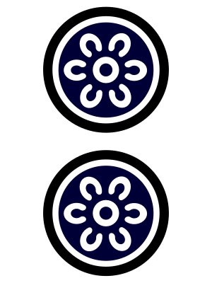
プレイ中に、迷った場所や詰まった場所はありましたか。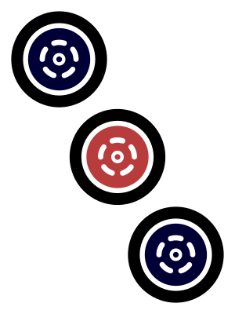
麻雀の経験は、どのくらい理解の助けになりましたか。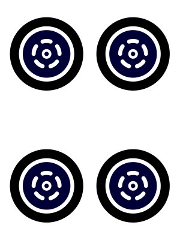
どの部分を面白いと感じましたか。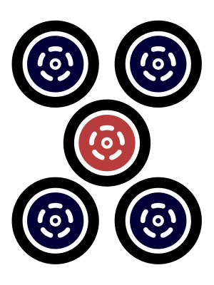
点棒を削られたとき、「痛い」と感じましたか。卓の相手や相棒は、そこにいるように感じられましたか。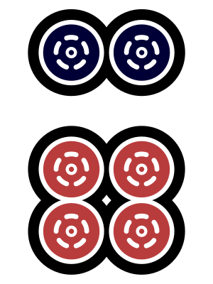
また遊びたいと思えましたか。思えなかったとしたら、どこで気持ちが切れましたか。
遊んでいただいた方へ
どんな内容でも歓迎します。短い一行でも構いません。次のどれも、同じくらい価値があります。
- 面白かったところ
- 分からなかったところ
- 途中で遊ぶのをやめた理由
- 操作しにくかったところ
- 好きになったキャラクター
不具合を報告するとき
ゲーム内の「設定 → テスト版について / 不具合を報告」で 環境情報をコピー を押してから貼り付けていただけると、原因を追いやすくなります（入るのはバージョン・ブラウザ・画面サイズだけで、メールアドレスや表示名は入りません）。画面の写真があれば、それだけでも助かります。既知の問題・注意事項
以下は把握済みです。報告いただかなくて大丈夫です。
- 一部のキャラクター・師匠は「準備中」の表示です（順に実装しています）。
- 楼光の館は第2章まで。その先は「未だ綴られぬ記憶」と表示されます。
- タイトルロゴと楼光の館の一部グラフィックは仮素材です（正式版で差し替えます）。
- 紙芝居の一部の効果音が無音です。立ち絵の表情差分は未対応です。
- 対局中のひと言（相手のリーチ・自分のリーチ・大物手への反応）は、いまは詩玥だけです。ほかのキャラクターは身ぶりとエモートで反応します。
- オンライン対戦は限定運用です（合言葉ルームでの対戦を推奨しています）。
- 推奨環境は PC・横画面の Google Chrome です。スマートフォンでも動きますが、横向きが必要です。
- テスト期間中は、更新によってセーブデータのリセットが必要になる場合があります。
バージョン情報
Test Build v0.9.0-test.2更新日 2026/10/02
- 対局の卓を「卓を囲む」形に。対戦相手が卓の奥に座り、リーチや和了・放銃に芝居で応えます。
- 削られたときの手応えを強化（画面の揺れ・HPバーの残像・残り4分の1で卓の縁が赤く脈打ち、心音が鳴る）。
- 相棒が局中も隣で反応（相手のリーチ・自分のリーチ・大物手）。VS画面での対局前のひと言と、対局後の絆の伸び（ログイン時）を追加。
- 流局カードに各席のテンパイ／ノーテンと手牌を表示。満貫未満の和了はダメージカードを省き、テンポよく次の局へ。
- すべてのモードを、相棒が待つホームに集約（CPU対戦はホームから2手）。
不具合を報告するときは、この版数を書き添えていただけると助かります。ゲーム画面の右下にも小さく表示されています。
さーて、今日も派手にツモってくヨ。ついてきて、ネ？